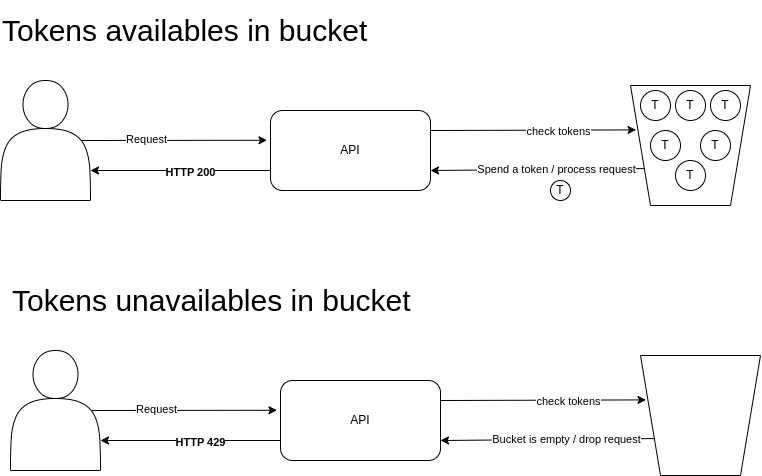

API Rate Limit
The API Rate Limit is a technique (or mechanism) to protect and to prevent the excessive use of an API.
The API Rate limit technique allows us to define a maximum number of accepted requests per time window. Example: One IP can make only 100 requests per minute or One user can make only 100 requests per minute. Or One ip can make only 10 requests per seconds. If the rate limit is reached, the API will return a 429 (Too Many Requests) response.
This technique is useful to prevent abuse of the API or to protect against a DDoS attack.
Code Example:
# pip install slowapi==0.1.9
from slowapi import Limiter
from slowapi.util import get_remote_address
from slowapi.errors import RateLimitExceeded
from slowapi.middleware import SlowAPIMiddleware
from fastapi.responses import JSONResponse
from fastapi import FastAPI, Request
def custom_rate_limit_handler(request, exc: RateLimitExceeded):
return JSONResponse(status_code=429, content={"detail": "Too Many Requests"})
app = FastAPI()
limiter = Limiter(key_func=get_remote_address, default_limits=["100/minute"])
app.state.limiter = limiter
app.add_middleware(SlowAPIMiddleware)
app.add_exception_handler(RateLimitExceeded, custom_rate_limit_handler)
# This route will reveive the global rate limit
@app.get("/health")
def root():
return {"status": "OK"}
# This route will overwrite the global rate limit and define a specific one
@app.get("/health")
@limiter.limit("8/minute")
def health(request: Request):
return {"status": "OK"}
API Throttling
API Throttling is a technique (or mechanism) to protect and to prevent the excessive use of an API like API Rate Limit. But, different from API Rate Limit, the API throttling does not block the client directly when the limit is reached, instead, the API throttling slows down the API usage for client, delaying the request processing or adding the request to a queue to be processed later.
This technique is useful to prevent abuse of the API, and better for user experience because, if a real user reaches the request limit, the access won't be blocked, only be delayed. But, against DDoS attacks, that mechanism isn't as effective as the API Rate limit (It's possible to set up blocks also).
The API Throttling works in follow way: One user can make 100 requests per minute, if the user make more than 100 requests per minute, the requests will be delayed or added to a queue to be processed later.
Is possible to set up a size to the queue and, if the queue is full, the requests will be dropped. In that case the API can stay more protected against a DDoS attack.
If possible, it is suitable to apply API Throttling on the proxy level to prevent unnecessary processing inside the API.
Token Bucket Algorithm
The token Bucket algorithm is an algorithm to define the behavior of rate limit. That algorithm work in the follow way:
- Our rate limit is 100 requests per minute, in other words, we have a "bucket" with 100 tokens per minute.
- Each request to the api consumes one token from the "bucket".
- If the "bucket" empties (rate limit reached for that time window) the next requests will be dropped (http response 429).
- The "bucket" will be filled with 100 tokens on the next time window, in that case, in the next minute the user can make up to 100 requests again.
